Shape of convergence depends on the optimizer!
 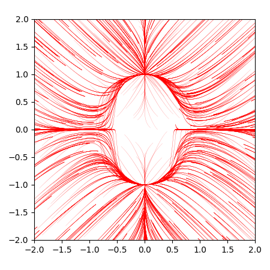
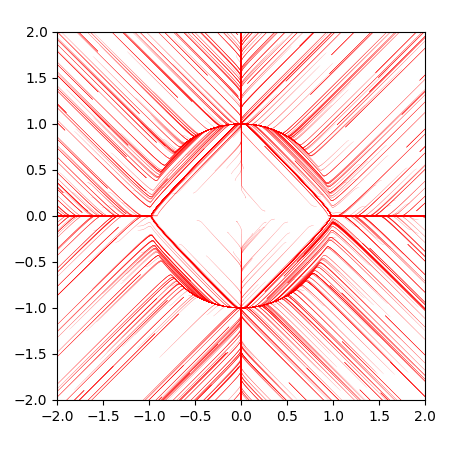
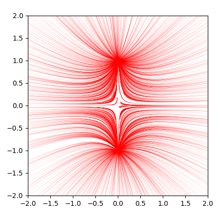
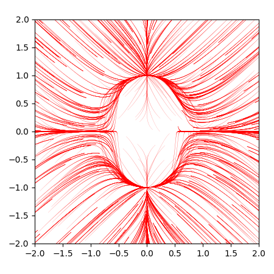
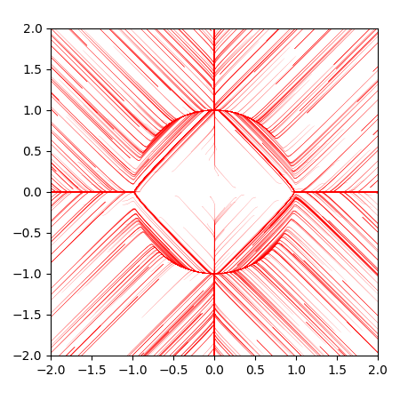
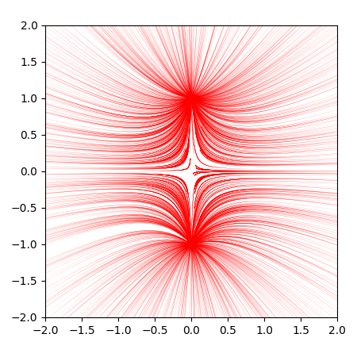
Gradient Descent, ADAM, RMS Prop, Momentum
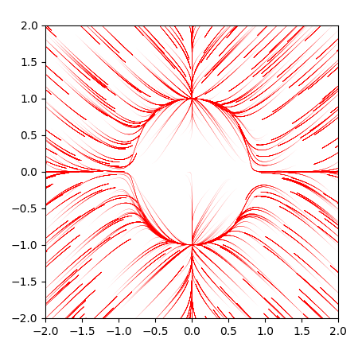
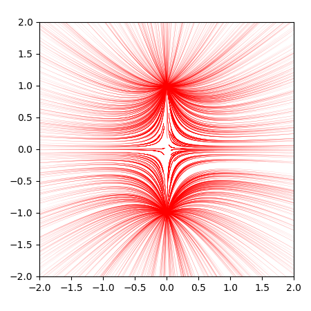
 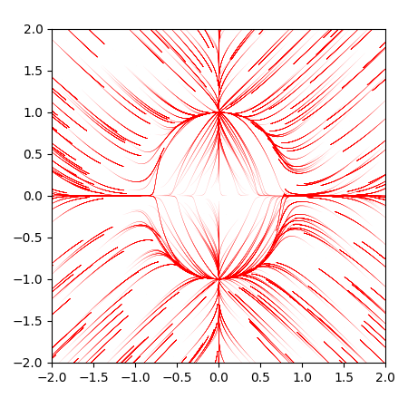
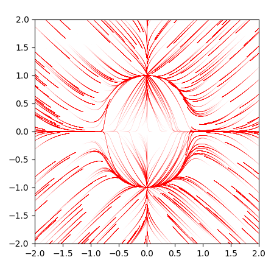
Proximal AdaGrad, Proximal Gradient Descent, Adagrad, FTRL
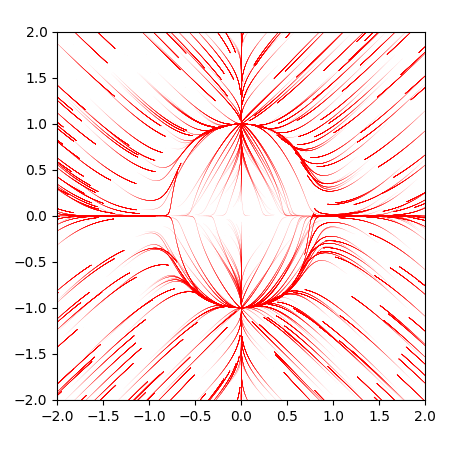
Proximal AdaGrad, Proximal Gradient Descent, Adagrad, FTRL